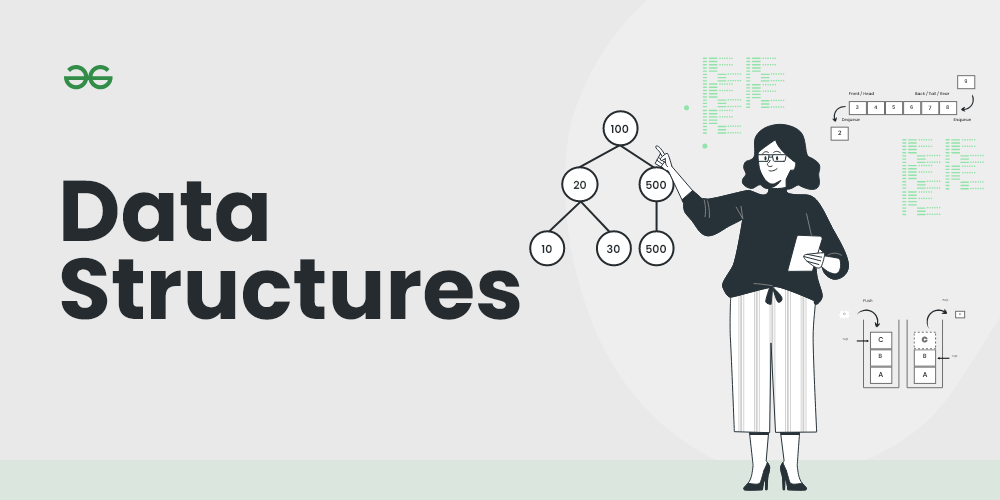

Ma'lumotlar tuzilmalariga kirish
Ma'lumotlar tuzilishi nima?
Ma'lumotlar strukturasi - bu kompyuterda ma'lumotlardan samarali foydalanish uchun ularni tartibga solishning o'ziga xos usuli. G'oya turli vazifalarning makon va vaqt murakkabligini kamaytirishdir.
Illustration
Yaxshi ma'lumotlar tuzilmasini tanlash bir qator muhim operatsiyalarni samarali bajarishga imkon beradi. Samarali ma'lumotlar tuzilmasi tuzilmani qayta ishlash uchun minimal xotira joyi va bajarilish vaqtini talab qiladi. Ma'lumotlar tuzilmasi faqat ma'lumotlarni tartibga solish uchun emas, balki ularni qayta ishlash, qidirib topish va saqlash uchun ham ishlatiladi. Har qanday dastur yoki dasturiy tizimda qo'llaniladigan asosiy va ilg'or turdagi ma'lumotlar tuzilmalari mavjud. Shuning uchun, biz ma'lumotlar tuzilmalari haqida yaxshi bilimga ega bo'lishimiz kerak.
Ma'lumotlar Tuzilmasi Zarurati:
Ma'lumotlarning tuzilishi va algoritm sintezi bir-biri bilan bog‘liq. Ma'lumotlarni taqdim etish tushunishga oson bo‘lishi kerak, shunda ishlab chiquvchi ham, foydalanuvchi ham operatsiyalarni samarali amalga oshirishi mumkin.
Ma'lumotlar tuzilmalari ma'lumotlarni tartibga solish, qidirib topish, boshqarish va saqlashning oson usulini ta'minlaydi.
Quyida ma'lumotlar tuzilmasiga bo'lgan ehtiyojlarning ro‘yxati keltirilgan.
- Ma'lumotlar tuzilmasini o'zgartirish oson.
- Kamroq vaqt talab qiladi.
- Xotira joyini tejaydi.
- Ma'lumotlarni taqdim etish oson.
- Katta ma'lumotlar bazasiga oson kirish imkoniyati
Ma'lumotlar Tuzilmasining Turlari/Tasnifi:
- Chiziqli Ma'lumotlar Tuzilmasi
- Noto'g'ri Chiziqli Ma'lumotlar Tuzilmasi
Chiziqli Ma'lumotlar Tuzilmasi:
- Elementlar bir o'lchamda, ya'ni chiziqli o'lchamda joylashtiriladi.
- Misol: ro'yxatlar, stek, navbat va boshqalar.
Chiziqsiz Ma'lumotlar Tuzilmasi
- Elementlar bir-ko'p, ko'p-bir va ko'p-ko'p o'lchamlarda joylashtiriladi.
- Misol: daraxt, graf, jadval va boshqalar.

Eng Mashhur Ma'lumotlar Tuzilmalari:
1. Massiv:
Massiv - bir xil turdagi ma'lumotlar elementlari ketma-ket xotira joylarida saqlanadigan to'plamdir. Maqsad - bir xil turdagi bir nechta elementlarni birga saqlashdir. Bu orqali har bir elementning joylashuvini asosiy qiymatga (ya'ni, massivning birinchi elementining xotira manziliga) faqat bir offset qo'shish orqali oson hisoblash mumkin.

Massiv Ma'lumotlar Tuzilmasi
2. Bog'langan Ro'yxatlar:
Massivlar kabi, Bog'langan Ro'yxat ham chiziqli ma'lumotlar tuzilmasi hisoblanadi. Ammo, massivlardan farqli o'laroq, bog'langan ro'yxat elementlari bir-biriga yaqin joylarda saqlanmaydi; elementlar ko'rsatkichlar (pointerlar) yordamida bog'langan.

Bog'langan Ma'lumotlar Tuzilmasi
3. Stek:
Stek - bu ma'lumotlar tuzilmasining chiziqli turi bo'lib, unda operatsiyalar ma'lum bir tartibda amalga oshiriladi. Tartib LIFO (Oxirgi kirgan - birinchi chiqadi) yoki FILO (Birinchi kirgan - oxirgi chiqadi) bo'lishi mumkin. Stekda barcha qo'shish va o'chirish operatsiyalari faqat ro'yxatning bir uchida amalga oshiriladi.
 Stek Operatsiyalari:
Stek Operatsiyalari:
- push(): Ushbu operatsiya bajarilganda, stekka yangi element qo'shiladi.
- pop(): Ushbu operatsiya bajarilganda, stekning yuqorisidagi element olib tashlanadi va qaytariladi.
- top(): Ushbu operatsiya stekning yuqorisidagi oxirgi qo'shilgan elementni olib tashlamasdan qaytaradi.
- size(): Ushbu operatsiya stekning o'lchamini, ya'ni undagi elementlar sonini qaytaradi.
- isEmpty(): Ushbu operatsiya stek bo'sh yoki bo'sh emasligini ko'rsatadi.
4. Navbat (Queue):
Stek kabi, navbat ham chiziqli tuzilma bo'lib, unda operatsiyalar ma'lum bir tartibda amalga oshiriladi. Bu tartib Birinchi Kirgan - Birinchi Chiqadi (FIFO) tamoyiliga asoslanadi. Navbatda elementlar bir uchidan qo'shiladi va boshqa uchidan o'chiriladi. Navbatning yaxshi misoli - biror resurs uchun navbatda turgan mijozlar, bunda birinchi bo'lib kelgan mijoz birinchi bo'lib xizmat ko'rsatadi. Steklar va navbatlar orasidagi farq o'chirishda ko'rinadi. Stekda oxirgi qo'shilgan element o'chiriladi, navbatda esa eng oldin qo'shilgan element o'chiriladi.

Navbat Ma'lumotlar Tuzilmasi
Navbat Operatsiyalari:
- Enqueue(): Navbat oxiriga yangi element qo'shadi (yoki saqlaydi).
- Dequeue(): Navbatdan elementlarni o'chirish operatsiyasi.
- Peek() yoki front(): Navbatning boshidagi elementni o'chirmasdan ko'rib chiqishni ta'minlaydi.
- rear(): Bu operatsiya navbat oxiridagi elementni o'chirmasdan qaytaradi.
- isFull(): Navbat to'lganligini tekshiradi.
- isNull(): Navbat bo'shligini tekshiradi.
4. Navbat (Queue):
Stek kabi, navbat ham chiziqli tuzilma bo'lib, unda operatsiyalar ma'lum bir tartibda amalga oshiriladi. Bu tartib Birinchi Kirgan - Birinchi Chiqadi (FIFO) tamoyiliga asoslanadi. Navbatda elementlar bir uchidan qo'shiladi va boshqa uchidan o'chiriladi. Navbatning yaxshi misoli - biror resurs uchun navbatda turgan mijozlar, bunda birinchi bo'lib kelgan mijoz birinchi bo'lib xizmat ko'rsatadi. Steklar va navbatlar orasidagi farq o'chirishda ko'rinadi. Stekda oxirgi qo'shilgan element o'chiriladi, navbatda esa eng oldin qo'shilgan element o'chiriladi.
Navbat Ma'lumotlar Tuzilmasi
Navbat Operatsiyalari:
- Enqueue(): Navbat oxiriga yangi element qo'shadi (yoki saqlaydi).
- Dequeue(): Navbatdan elementlarni o'chirish operatsiyasi.
- Peek() yoki front(): Navbatning boshidagi elementni o'chirmasdan ko'rib chiqishni ta'minlaydi.
- rear(): Bu operatsiya navbat oxiridagi elementni o'chirmasdan qaytaradi.
- isFull(): Navbat to'lganligini tekshiradi.
- isNull(): Navbat bo'shligini tekshiradi.
6. Ikkiyoqlama Qidiruv Daraxti (Binary Search Tree):
Ikkiyoqlama qidiruv daraxti bu ikkiyoqlama daraxt bo'lib, quyidagi qo'shimcha xususiyatlarga ega:
- Chap tomonda ildiz tugunining kalitlari ildiz tugunining kalitidan kichik bo'ladi.
- O'ng tomonda ildiz tugunining kalitlari ildiz tugunining kalitidan katta bo'ladi.
- Ikkiyoqlama daraxtda takrorlanuvchi kalitlar mavjud emas.
Quyidagi xususiyatlarga ega bo'lgan ikkiyoqlama daraxti Ikkiyoqlama qidiruv daraxti (BST) deb ataladi.

Ikkiyoqlama Qidiruv Daraxti Ma'lumotlar Tuzilmasi
7. Heap (Yig'ish):
Heap bu maxsus daraxtga asoslangan ma'lumotlar tuzilmasi bo'lib, daraxt to'liq ikkilik daraxti hisoblanadi. Umuman olganda, Heaps ikki turga bo'linadi:
- Max-Heap: Max-Heapda ildiz tugunida mavjud bo'lgan kalit, uning barcha bolalaridagi kalitlardan katta bo'lishi kerak. Shu xususiyat, barcha kichik daraxtlar uchun ham to'g'ri bo'lishi kerak.
- Min-Heap: Min-Heapda ildiz tugunida mavjud bo'lgan kalit, uning barcha bolalaridagi kalitlardan kichik bo'lishi kerak. Shu xususiyat, barcha kichik daraxtlar uchun ham to'g'ri bo'lishi kerak.

Max va Min Heap
8. Hashing Ma'lumotlar Tuzilmasi:
Hashing - bu maxsus funksiya bo'lgan Hash funktsiyasidan foydalanish uchun mo'ljallangan muhim ma'lumotlar tuzilmasidir. Bu funksiya berilgan qiymatni ma'lum bir kalit bilan xaritalash uchun ishlatiladi, bu esa elementlarni tezroq olish imkonini beradi. Xaritalash samaradorligi ishlatilgan hash funktsiyasining samaradorligiga bog'liq.
Masalan, agar hash funktsiyasi H(x) qiymatini Arrayda x%10 indeksida xaritalasa. Misol uchun, agar qiymatlar ro'yxati [11, 12, 13, 14, 15] bo'lsa, ular mos ravishda {1, 2, 3, 4, 5} pozitsiyalarida array yoki Hash jadvalida saqlanadi.

Hash Ma'lumotlar Tuzilmasi
9. Matritsa:
Matritsa - bu sonlar to'plamining qatordan va ustundan tartiblangan ko'rinishidir. Matritsa elementlarini qavslar yoki qavslarga joylashtirish zarur.
9 elementdan iborat bo'lgan matritsa quyida ko'rsatilgan.

Matritsa
10. Trie:
Trie - bu samarali ma'lumotlarni qidirish ma'lumotlar tuzilmasidir. Trie yordamida qidiruv murakkabliklari optimal chegaraga (kalit uzunligi) keltirilishi mumkin. Agar biz kalitlarni ikkilik qidiruv daraxtida saqlasak, yaxshi muvozanatlangan BST vaqtni M * log N ga, bu yerda M - maksimal satr uzunligi va N - daraxtdagi kalitlar soni, sarflaydi. Trie yordamida biz kalitni O(M) vaqtda qidirishimiz mumkin. Ammo, bu Trie saqlash talablariga ta'sir qiladi.

Trie Ma'lumotlar Tuzilmasi
11. Graf:
Graf - bu tugunlar (vertexlar) yig'indisi bo'lib, ular qirralar orqali bog'langan. Grafalar ob'ektlar o'rtasidagi munosabatlarni ifodalash uchun ishlatiladi va kompyuter fanlari, matematika va boshqa sohalarda keng qo'llaniladi. Grafalar turli xil real dunyo tizimlarini modellashda ishlatilishi mumkin, masalan, ijtimoiy tarmoqlar, transport tarmoqlari va kompyuter tarmoqlari.

Graf Ma'lumotlar Tuzilmasi
Ma'lumotlar Tuzilmalari Qo'llanilishi:
Ma'lumotlar tuzilmalari quyidagi sohalarda ishlatiladi:
- Operatsion tizim
- Grafika
- Kompyuter dizayni
- Blokcheyn
- Genetika
- Rasmni qayta ishlash
- Simulyatsiya,
- va boshqalar.
GfG 160-ga qo'shiling, bu kodlash bo'yicha ko'nikmalaringizni oshirishga mo'ljallangan 160 kunlik tanlovlar safaridir. Har kuni, tanlangan masalani yechib, maqolalar va videolar orqali batafsil yechimlarga o'ting va har qanday suhbatga tayyorgarligingizni yaxshilang—bularning barchasi bepul! Shuningdek, GfG sovg'alarini yutib olish imkoniyatiga ega bo'ling! - Hozir o'rganing